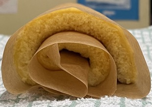

Swiss roll
Cake
- Whisk together on high for 8 mins till get ribbons
- 100g caster sugar
- 3 large eggs at room temperature
- 1 tsp vanilla extract
- Whisk for another 5 mins on low
- Fold in gently after sieving
- 100g self-raising flour
- 1 tsp cornflour
- Pour mixture into a 34x27cm buttered and lined baking tray
- Spread the mixture evenly with bench scraper
- Tap to remove air bubbles
- Bake at 160°C for 11 mins until golden and springy
- Take out of oven and place on cake rack to cool for 2 mins
- Flip over onto another baking sheet
- Carefully peel off the baking paper attached to the sponge
- Trim edges
- Allow to cool for 2 mins then roll up while still warm with the paper inside
- Allow to cool
- Unroll and spread filling up to last 1"
- 150ml double cream sweetened & whipped
- jam / lemon curd
- Roll back up, peeling away paper as you go
Notes
- First go: 4 large eggs, no cornflour, no vanilla, 10 mins bake, very sticky cake
- Blackcurrant jam nice
- Original recipe
Pics
